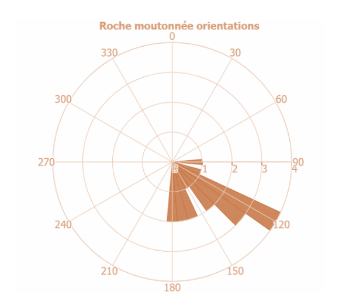
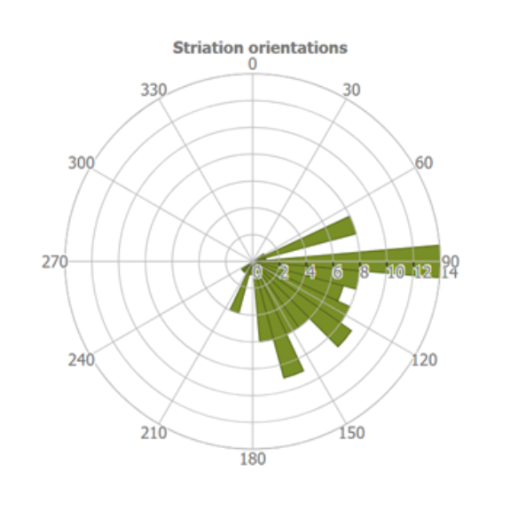
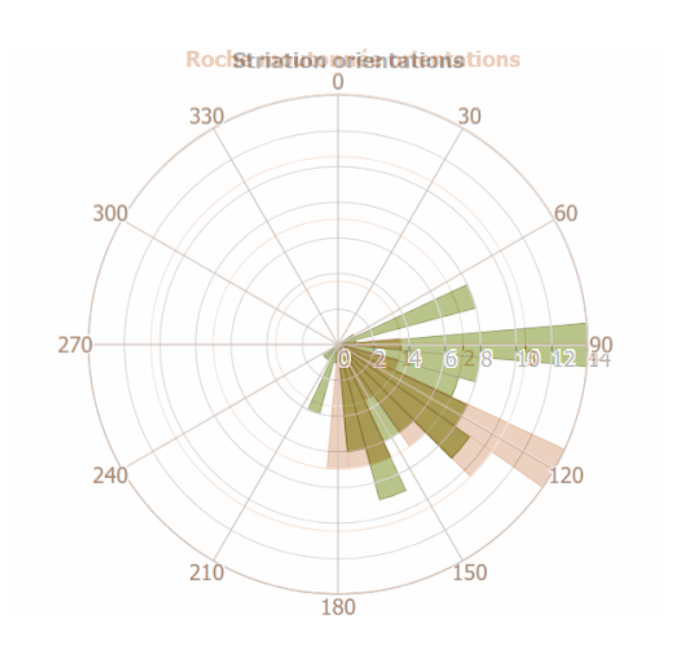
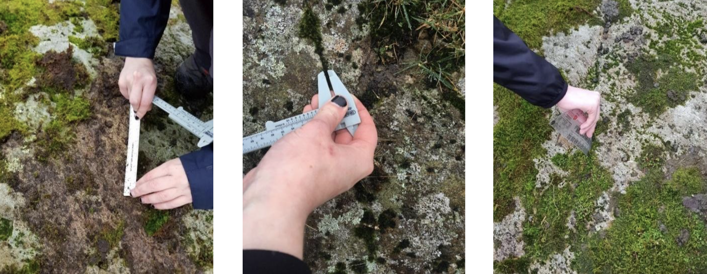

Determining the direction of ice flow in Easedale Valley
Introduction
This report will try to determine the direction of ice flow in Easedale Valley (Lake District, UK). During the Younger Dryas, the Lake District was covered by cirque glaciers (Antarctic Glaciers, 2021) and therefore will have lowland glacial features which can be used to help determine the direction of previous glacial flow.
Roche moutonnées are a type of ice scoured feature that are created when the ice moves over an outcropping of resistant rock causing regulation creep to occur. This is when the glacial ice melts due to the pressure of the rock blocking its path which then allows the ice to move, the pressure reduces after it has passed the rock and the meltwater re-freezes (Davies, 2020). The meltwater acts as a lubricant on the subglacial bed of the glacier meaning that it can slip over the rock easier. Plucking occurs when the meltwater runs into cracks in the rock and re-freezes after the pressure reduces; the glacier will continue moving over the rock and will pluck away the frozen side of the rock (Boulton, 1982). This causes the stoss side to be smooth as the glacier travels over it whilst the lee side to be jagged as plucking occurs (Davies, 2020). Therefore, by looking at the orientation of inclination of Roche moutonnées, I can determine the direction of ice flow.
Additionally, there are also striations on the Roche moutonnées. The orientations of these lines are parallel to the direction of the ice flow (McCaroll, 1989), and are formed due to rock fragments in the base of the glacier scratching the bedrock below. According to (Sugden, 1976), the orientation of these striations suggests the direction of travel for the glacier, this is further evidenced by (Rafferty, 2010) suggesting that because the striation-cutting material was dragged across the rock surface by the ice, the long axis of the striation indicates the direction of ice movement in the immediate vicinity of that striation, therefore studying striations are directly relevant to the aim of this study.
Hypothesis
There will be a positive correlation between the orientations of the Roche moutonnées and the striation marks on them.
Sub question
To what extent is there a correlation between the Roche moutonnées and the striation marks?
By collecting and analysing data of the orientations of Roche moutonnées and striation marks I can compare the two data sets to see if they follow a similar directional pattern. To determine the strength and significance of the correlation between the two, I will use Spearman’s rank correlation. A positive correlation would suggest that the orientations of the Roche moutonnées and striation marks are aligned, supporting the hypothesis that the same ice flow direction influenced both features. This analysis will help me assess whether the observed relationship is strong enough to infer the direction of past ice flow in the valley.
Data Analysis

Over 3 days of gathering data in Easedale Valley, we collected 18 sets of information on Roche moutonnées. From inferring data from the rose diagrams of Roche moutonnées on its own, it is clear that there is a distinct direction of ice travel which is southeast.

The rose diagram on striations show that most point towards east and southeast indicating two distinct direction of ice travel, however this means that the orientations of striations are not exactly the same as that of Roche moutonnées. There is much more variation, however this could be due to human error when determining whether the marks were actually striations or scratches on the rock.
To what extent is there a correlation between the Roche moutonnées and the striation marks?

In this rose diagram above, I have overlapped the two to show the relationship between the two and it is clear that the Roche moutonnées and striations do loosely face in the same direction of southeast as some do overlap each other. However, the majority of the striations are pointing in an eastward direction whilst only a very small amount of Roche moutonnées point east suggesting that the correlation between them is weak at first glance.
Therefore I will use Spearman’s rank so I can determine the strength of correlation between the Roche moutonnée and striation orientations, if the p-value is significant, then that would mean that my hypothesis is correct because it shows that there is a correlation between the two and can be used to explain ice-flow direction.
My results show that there is a moderate positive correlation (0.47) that is significant (0.04) between the orientations of Roche moutonnées and striation marks, which answers the sub question that there is a correlation between the two features.
Conclusion
Ultimately, my results support my hypothesis that there is a positive correlation between the orientations of Roche moutonnées and striation marks, therefore this study suggests that the flow of glacial ice in Easedale Valley was South East.
Bibliography
Antarctic Glaciers (2021). Younger Dryas Glacial Moraines.
Boulton. (1982). Processes and patterns of glacial erosion. Coates D.R. (eds) Glacial Geomorphology.
Chorley, e. a. (1984). A stereographic model of the distribution of microscale features of glacial erosion across the surface of a typical roche moutonnee. Geomorphology, Methuen.
Davies, B. (2020). Deformation and Sliding. Glacier mass balance.
Iverson. (1991). Morphology of glacial striae: Implications for abrasion of glacier beds and fault surfaces.
McCaroll. (1989). “Striations” Produced by Catastrophic Subglacial Drainage of a Glacier-dammed Lake, Mjølkedalsbreen, Southern Norway.
Rafferty, J. P. (2010). Glaciers, Sea Ice, and Ice Formation. Dynamic Earth.
Sugden, D. E. (1976). Glaciers and Landscape: A Geomorphological Approach.
Technical Appendix
1. Methodology
Primary data of the orientations of Roche moutonnées and their striation marks was collected from Easedale valley in the Lake District.
In a group of 4, we first measured the length of the whole Roche moutonnée using a 50m surveyors’ tape, however there was room for error because we could not make sure that the tape was exactly straight due to vegetation on the landforms and it was not ethically right to remove them.
To measure the orientation, we had a member of the group stand on top of the Roche moutonnée and hold a digital compass in the way it was facing i.e., where the jagged lee side was pointing. We decided to use a digital compass rather than an analogue compass as there is less room for error because digital compasses show the precise degree of the direction you are facing clearly on the screen, whereas analogue compasses require reading a small needle which makes it vulnerable to human error.
After we measured the Roche moutonnées, we then looked at the micro features. To measure the length of each striation mark, we used a plastic ruler because the units (mm and cm) will be more appropriate when measuring striations. With striation marks longer than 30cm, we used the surveyors tape again to measure these. We then measured the width of each striation using a vernier caliper because it has a high degree of accuracy and there is little margin of error compared to a standard ruler. To measure the depth, we used a grain card with a ruler on it. It was difficult to know whether or not it were striations we were measuring or just faults in the rock. (Iverson, 1991) suggested that striations will be found in parallel groups, additionally, (Chorley, 1984) highlighted the zones where striations are found on Roche moutonnées i.e., the sides of the rock rather than the very front. Therefore, we tried to use this information to decide whether or not the lines were striations or not. Furthermore, there were a lot of vegetation covering some striation marks so we could not measure those due to ethical reasons; we did not want to forcibly remove the plants. All measurements of the length, width and depth of the striations all had a risk of human error, however we tried to be as accurate as possible and stayed within the tolerance of accuracy, this was done by ensuring that the tape measure was completely straight for larger striations and that the ruler was closely aligned to the striation mark.

2. Spearman’s Rank Table
To get the striation orientation into one column, I found the mean orientation for the striations on their respective Roche moutonnée, though I did not include any anomalies as identified in the rose diagrams when finding the mean.
| Roche moutonnées | Roche moutonnées orientation | Roche moutonnées rank | Striation orientation | Striation rank | Difference | D ² | ||
| 1 | 172 | 3 | 182.6 | 1 | -2 | 4 | ||
| 2 | 117 | 17 | 98.7 | 16 | 1 | 1 | ||
| 3 | 128 | 14 | 96 | 17 | 3 | 9 | ||
| 4 | 121 | 15 | 174.25 | 2 | -13 | 169 | ||
| 5 | 92 | 18 | 100.8 | 14 | -4 | 16 | ||
| 6 | 163 | 6 | 137.6 | 7 | 1 | 1 | ||
| 7 | 128 | 14 | 117.6 | 12 | -2 | 4 | ||
| 8 | 182 | 2 | 136.4 | 8 | -1 | 1 | ||
| 9 | 148 | 8 | 115.4 | 13 | 5 | 25 | ||
| 10 | 120 | 16 | 158.3 | 4 | -12 | 144 | ||
| 11 | 151 | 7 | 129.4 | 9 | -2 | 4 | ||
| 12 | 138 | 11 | 95.4 | 18 | 7 | 49 | ||
| 13 | 146 | 9 | 100.25 | 15 | 6 | 36 | ||
| 14 | 139 | 10 | 118.8 | 11 | 1 | 1 | ||
| 15 | 165 | 5 | 150.7 | 6 | 1 | 1 | ||
| 16 | 188 | 1 | 161.6 | 3 | 2 | 4 | ||
| 17 | 130 | 12 | 123.8 | 10 | -2 | 4 | ||
| 18 | 170 | 4 | 152 | 5 | 1 | 1 | ||
| coeff(rs): | 0.47906048 | |||||||
| n: | 18 | |||||||
| t statistic: | 2.183050176 | |||||||
| df: | 16 | |||||||
| p value: | 0.044276367 |
3. Raw Data
| Day 1 Lowland | |||||
| Direction | Orientation (◦) | Length (cm) | |||
| RM 1 | S | 172 | 43 | ||
| Striation | Direction | Orientation (◦) | Length (cm) | Depth (mm) | Width (mm) |
| 1 | S | 167 | 32 | 15 | 9 |
| 2 | S | 167 | 27 | 14 | 4 |
| 3 | S | 172 | 51 | 13 | 4 |
| 4 | SW | 207 | 94 | 23 | 6 |
| 5 | S | 200 | 47 | 12 | 9 |
| Direction | Orientation (◦) | Length (cm) | |||
| RM 2 | SE | 117 | 56 | ||
| Striation | Direction | Orientation (◦) | Length (cm) | Depth (mm) | Width (mm) |
| 1 | E | 98 | 153 | 3 | 2 |
| 2 | E | 105 | 114 | 9 | 3 |
| 3 | E | 82 | 170 | 7 | 6 |
| 4 | E | 91 | 29 | 1 | 1 |
| 5 | SE | 101 | 9 | 0.5 | 0.5 |
| Direction | Orientation (◦) | Length (cm) | |||
| RM 3 | SE | 128 | 6 | ||
| Striation | Direction | Orientation (◦) | Length (cm) | Depth (mm) | Width (mm) |
| 1 | E | 77 | 129 | 12 | 7 |
| 2 | NE | 60 | 130 | 15 | 5 |
| 3 | E | 72 | 26 | 5 | 4 |
| 4 | SE | 115 | 71 | 1 | 2 |
| 5 | SE | 120 | 62 | 5 | 5 |
| Direction | Orientation (◦) | Length (cm) | |||
| RM 4 | SE | 121 | 561 | ||
| Striation | Direction | Orientation (◦) | Length (cm) | Depth (mm) | Width (mm) |
| 1 | SE | 136 | 23 | 1 | 1 |
| 2 | SW | 203 | 15 | 1 | 2 |
| 3 | SW | 225 | 9 | 2 | 2 |
| 4 | SE | 133 | 19 | 1 | 1 |
| 5 | E | 70 | 67 | 2 | 2 |
| Direction | Orientation (◦) | Length (cm) | |||
| RM 5 | E | 92 | 487 | ||
| Striation | Direction | Orientation (◦) | Length (cm) | Depth (mm) | Width (mm) |
| 1 | E | 98 | 76 | 1 | 3 |
| 2 | SE | 120 | 9 | 1 | 2 |
| 3 | SE | 118 | 5 | 0.5 | 1 |
| 4 | E | 98 | 61 | 4 | 3 |
| 5 | E | 70 | 23 | 4 | 3 |
| Direction | Orientation (◦) | Length (cm) | |||
| RM 6 | S | 163 | 670 | ||
| Striation | Direction | Orientation (◦) | Length (cm) | Depth (mm) | Width (mm) |
| 1 | E | 102 | 100 | 2 | 3 |
| 2 | SE | 151 | 66 | 2 | 1 |
| 3 | SE | 148 | 94 | 1 | 3 |
| 4 | SE | 124 | 62 | 2 | 2 |
| 5 | S | 163 | 7 | 4 | 3 |
| Direction | Orientation (◦) | Length (cm) | |||
| RM 7 | SE | 128 | 170 | ||
| Striation | Direction | Orientation (◦) | Length (cm) | Depth (mm) | Width (mm) |
| 1 | SE | 111 | 44 | 1 | 1 |
| 2 | SE | 116 | 17 | 1 | 1 |
| 3 | SE | 122 | 27 | 2 | 2 |
| 4 | SE | 117 | 26 | 2 | 4 |
| 5 | SE | 122 | 21 | 1 | 2 |
| Direction | Orientation (◦) | Length (cm) | |||
| RM 8 | S | 182 | 840 | ||
| Striation | Direction | Orientation (◦) | Length (cm) | Depth (mm) | Width (mm) |
| 1 | S | 171 | 19 | 5 | 3 |
| 2 | S | 166 | 25 | 2 | 2 |
| 3 | SE | 135 | 6 | 1 | 1 |
| 4 | E | 105 | 121 | 3 | 4 |
| 5 | E | 105 | 23 | 0.5 | 3 |
| Direction | Orientation (◦) | Length (cm) | |||
| RM 9 | SE | 148 | 85 | ||
| Striation | Direction | Orientation (◦) | Length (cm) | Depth (mm) | Width (mm) |
| 1 | E | 111 | 10 | 2 | 2 |
| 2 | E | 97 | 43 | 3 | 1 |
| 3 | SE | 141 | 38 | 1 | 2 |
| 4 | SE | 137 | 31 | 4 | 2 |
| 5 | E | 91 | 49 | 0.5 | 1 |
| Direction | Orientation (◦) | Length (cm) | |||
| RM 10 | SE | 120 | 65 | ||
| Striation | Direction | Orientation (◦) | Length (cm) | Depth (mm) | Width (mm) |
| 1 | SE | 142 | 51 | 0 | 5 |
| 2 | SE | 169 | 26 | 0.2 | 3 |
| 3 | SE | 173 | 31 | 0.3 | 2 |
| 4 | SE | 155 | 92 | 0.2 | 1 |
| 5 | SE | 130 | 41 | 0.3 | 8 |
| Direction | Orientation (◦) | Length (cm) | |||
| RM 11 | S | 151 | 78 | ||
| Striation | Direction | Orientation (◦) | Length (cm) | Depth (mm) | Width (mm) |
| 1 | SE | 148 | 18 | 2 | 2 |
| 2 | S | 164 | 26 | 3 | 1 |
| 3 | E | 79 | 17 | 1 | 2 |
| 4 | E | 130 | 27 | 4 | 2 |
| 5 | SE | 126 | 12 | 1 | 1 |
| Day 2 Upland | |||||
| Direction | Orientation (◦) | Length (cm) | |||
| RM 1 | SE | 138 | 88 | ||
| Striation | Direction | Orientation (◦) | Length (cm) | Depth (mm) | Width (mm) |
| 1 | E | 94 | 9 | 1 | 1 |
| 2 | E | 90 | 17 | 5 | 4 |
| 3 | E | 97 | 8 | 2 | 5 |
| 4 | SE | 125 | 11 | 3 | 4 |
| 5 | E | 71 | 13 | 1 | 0.5 |
| Direction | Orientation (◦) | Length (cm) | |||
| RM 2 | SE | 146 | 131 | ||
| Striation | Direction | Orientation (◦) | Length (cm) | Depth (mm) | Width (mm) |
| 1 | SW | 208 | 6 | 3 | 2 |
| 2 | SE | 118 | 8 | 5 | 2 |
| 3 | E | 98 | 35 | 7 | 3 |
| 4 | E | 90 | 8 | 3 | 3 |
| 5 | E | 95 | 7 | 3 | 2 |
| Direction | Orientation (◦) | Length (cm) | |||
| RM 3 | SE | 139 | 524 | ||
| Striation | Direction | Orientation (◦) | Length (cm) | Depth (mm) | Width (mm) |
| 1 | SE | 141 | 32 | 12 | 4 |
| 2 | E | 107 | 9 | 2 | 2 |
| 3 | E | 103 | 17 | 4 | 3 |
| 4 | E | 92 | 7 | 3 | 7 |
| 5 | SE | 151 | 6 | 2 | 2 |
| Direction | Orientation (◦) | Length (cm) | |||
| RM 4 | S | 165 | 909 | ||
| Striation | Direction | Orientation (◦) | Length (cm) | Depth (mm) | Width (mm) |
| 1 | S | 166 | 24 | 1 | 3 |
| 2 | SE | 148 | 10 | 5 | 2 |
| 3 | S | 171 | 7 | 4 | 1 |
| 4 | E | 70 | 9 | 3 | 1 |
| 5 | S | 198 | 6 | 3 | 1 |
| Direction | Orientation (◦) | Length (cm) | |||
| RM 5 | S | 188 | 78 | ||
| Striation | Direction | Orientation (◦) | Length (cm) | Depth (mm) | Width (mm) |
| 1 | SE | 123 | 13 | 3 | 1 |
| 2 | SW | 239 | 6 | 4 | 1 |
| 3 | S | 159 | 14 | 7 | 3 |
| 4 | SE | 152 | 12 | 10 | 2 |
| 5 | SE | 135 | 8 | 6 | 5 |
| Direction | Orientation (◦) | Length (cm) | |||
| RM 6 | SE | 130 | 215 | ||
| Striation | Direction | Orientation (◦) | Length (cm) | Depth (mm) | Width (mm) |
| 1 | S | 165 | 5 | 3 | 1 |
| 2 | E | 179 | 17 | 3 | 4 |
| 3 | E | 97 | 16 | 4 | 3 |
| 4 | E | 78 | 20 | 0.5 | 2 |
| 5 | E | 100 | 7 | 3 | 2 |
| Direction | Orientation (◦) | Length (cm) | |||
| RM 7 | SE | 170 | 45 | ||
| Striation | Direction | Orientation (◦) | Length (cm) | Depth (mm) | Width (mm) |
| 1 | S | 179 | 13 | 2 | 2 |
| 2 | SE | 130 | 20 | 3 | 3 |
| 3 | SE | 134 | 11 | 1 | 1 |
| 4 | S | 155 | 6 | 3 | 1 |
| 5 | SW | 167 | 17 | 2 | 4 |